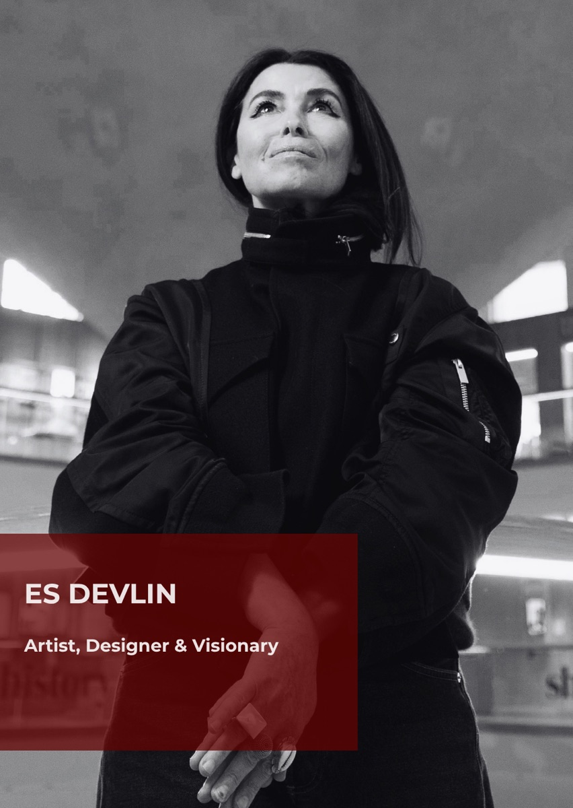

Es Devlin
Artist · Designer & Visionary
Es Devlin is one of the most extraordinary creative minds of our time, renowned for her singular ability to transform imagination into immersive worlds. Few artists have moved so effortlessly across the boundaries of sculpture, stage design, music, architecture and light, creating experiences that captivate millions around the world. Her achievements include the London Design Medal, multiple Olivier, Tony, Emmy and Critics’ Circle awards, and a CBE for services to design.
Her creative vision also extends to Homo Faber 2026: An Island of Light in Venice, where her work brings a distinctive artistic perspective to the celebration of craftsmanship and human creativity.
This October, the Design Museum in London celebrates her remarkable 30-year career with Es Devlin: Other Worlds, her first retrospective in Europe. Bringing together artworks, installations and her most extensive archive presentation to date, the exhibition offers an unprecedented insight into the imagination and creative process of an artist whose work continues to redefine the boundaries of contemporary creative expression.